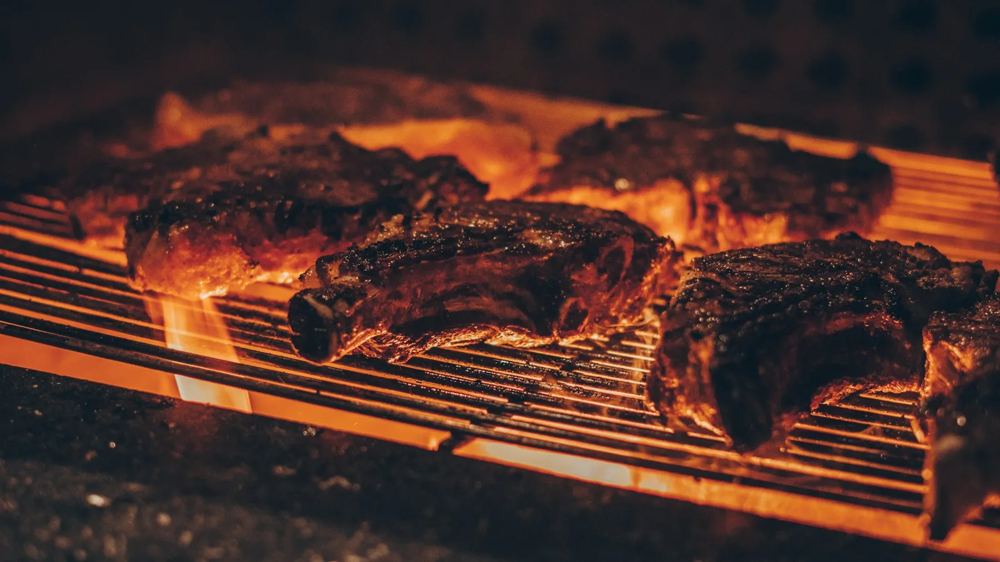
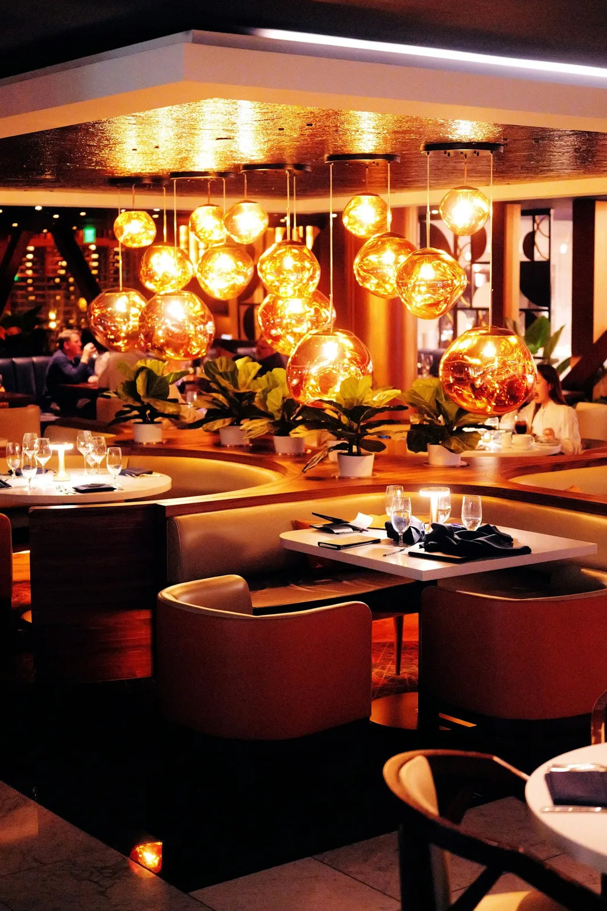

Uma noite só de vocês.
Luz baixa, uma boa conversa e sabores para compartilhar.

Cozinha brasileira, ingredientes de verdade e o tempo certo da brasa. Sente-se. A casa é sua.

Acreditamos que uma refeição especial começa muito antes de chegar à mesa. Começa na escolha dos ingredientes, no cuidado com cada preparo e no prazer de receber.
Na BRASA, os sabores brasileiros encontram o calor do fogo. Da entrada para compartilhar ao último doce, cada detalhe convida a ficar mais um pouco.
Conheça os sabores da casaLuz baixa, uma boa conversa e sabores para compartilhar.
Um almoço tranquilo e aquele gostinho de estar em casa.
Aniversários, reencontros e pequenas grandes conquistas.
Escolha a companhia. A gente cuida do resto.
Rua das Oliveiras, 128 · Centro
Jaguaquara — BA
Terça a sexta18h às 23h
Sábado12h às 23h
Domingo12h às 16h
À la carte · Retirada · Reservas para grupos
Você pode vir sem reserva, mas recomendamos combinar sua visita para fins de semana e grupos. A confirmação depende da disponibilidade da equipe.
Sim. Nosso risoto de cogumelos é uma opção vegetariana. Consulte a equipe sobre ingredientes e adaptações antes de pedir.
Claro! Informe o número de convidados e a data desejada na solicitação de reserva para combinar os detalhes com a equipe.